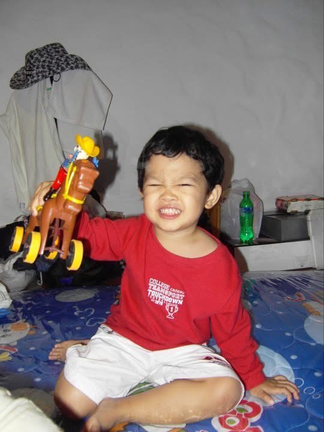
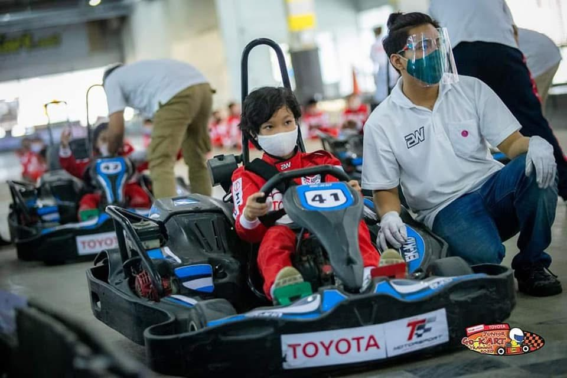

My Profile
About Me
ประวัติการศึกษา ทักษะ และการอบรมที่ผ่านมาของผม
My education, skills, and the training I've been through
Introduction
ผมปัณยกร สิงห์ดวง ชอบการเรียนรู้ในสิ่งใหม่ๆที่ไม่เคยลอง และชอบในการลงมือต่างๆด้วยตัวเอง ผมมีประสบการณ์จากการนำเสนองานวิจัยในงานระดับนานาชาติ การแข่งขันระดับประเทศและภูมิภาค ความหลงไหลในรถยนต์คืออีกหนึ่งสิ่งที่ผมมี ผมเคยเข้าร่วมการอบรมการขับรถแข่ง และอบรมการซ่อมแอร์รถยนต์ มีประสบการณ์การทำงานในอู่รถจริงๆ และได้ลงมือทำจริงๆ ขอเล่าเรื่องวัยเด็กของผมให้ฟังสักหน่อยครับ ก่อนจะเดินทางมาถึงตรงนี้
I'm Panyakorn Singhadoung. I love learning things I've never tried before, and I enjoy getting hands-on with everything myself. I have experience presenting research at international conferences, as well as competing at national and regional levels. A passion for cars is another part of who I am — I've attended race driving training and automotive air conditioning repair training, and I've worked hands-on in a real garage. Let me tell you a little about my childhood, before I arrived where I am today.
Wansawangchit School
The Demonstration School of Bansomdejchaopraya Rajabhat University
[Edit here: add photos at images/Auto-slide/1.jpg and images/Auto-slide/2.jpg (add more Auto-slide/3.jpg etc. if you want), then uncomment the <img> tags below instead of this placeholder — they will fade through automatically]


ตั้งแต่เด็กผมเดินทางไปไหนมาไหนกับพ่ออยู่บ่อยๆ เวลานั่งรถพ่อชอบชี้ให้ดูรถต่างๆที่ขับผ่านไปมา และบอกชื่อรุ่นให้ฟัง มันคือจุดเล็กๆที่ทำให้ผมเริ่มมีความสนใจในรถขึ้นมาแบบไม่รู้ตัว พอเริ่มโตขึ้นพ่อผมก็ได้สอนการขับรถให้ผมพอได้ลองลงมือทำจริง มันทำให้ผมเกิดความอยากรู้ว่าสิ่งต่างๆรอบตัวทำงานยังไง ผมเริ่มจาการรื้อและซ่อมรถบังคับของผมเอง ผมรู้สึกสนุกและตื่นเต้นไปในตัว จนผมรู้ว่าผมชอบอะไรและมีความฝันว่าอยากทำอะไร ผมโชคดีที่มีคนรู้จักทำการเกี่ยวกับรถ ทำให้ผมได้มีโอกาสไปเรียนรู้และได้ลงมือทำแบบจริงๆ ผมได้ลองถูกลองผิด และได้ลองในสิ่งที่ไม่เคยและไม่กล้าลอง มันทำให้ผมรู้ว่าบางทีการได้ทำอะไรใหม่ๆก็ไม่ได้น่ากลัวอย่างที่คิด แน่นอนว่าทุกอย่างจะไม่ราบรื่นขนาดนี้ถ้าไม่ได้การซัพพอร์ตจากครอบครัวและคนรอบข้างของผม ทั้งหมดนี้คือสิ่งที่ทำให้ผมเป็นผมในทุกวันนี้ครับ
Ever since I was little, I often travelled around with my dad. While riding in the car, he liked to point out the cars passing by and tell me their model names. That was the small spark that got me interested in cars without even realising it. As I grew older, my dad taught me how to drive, giving me the chance to actually try it hands-on. It made me curious about how the things around me work. I started by taking apart and repairing my own RC cars — I found it fun and exciting at the same time. That's how I came to know what I love and what I dream of doing. I was lucky to know people who work with cars, which gave me the chance to learn and get real hands-on experience. I got to try, make mistakes, and attempt things I had never done or never dared to do. It taught me that trying something new isn't always as scary as it seems. Of course, none of this would have gone so smoothly without the support of my family and the people around me. All of this is what has made me who I am today.